용접산업기사 (2007-05-13 기출문제)
1과목: 용접야금 및 용접설비제도
1. 강괴내의 응고는 상당히 빠르고 비평형 상태이므로 최초에 응고하는 부분과 나중에 응고하는 중심부에서는 그 화학성분이 상당히 달라지게 되며 이와 같이 화학성분이 달라지는 것을 무엇이라 하는가?
- 포정
- 포석
- 편석
- 편정
(정답률: 43%)

2. 체심 입방격자구조에서 단위격자와 체심을 포함하면 전체 원자 수는 몇 개인가?
- 2개
- 4개
- 6개
- 8개
(정답률: 57%)
3. 다음 스테인리스강 중 비자성인 것은?
- 페라이트형 스테인리스강
- 마텐자이트형 스테인리스강
- 오스테나이트형 스테인리스강
- 석출경화형 스테인리스강
(정답률: 68%)
4. 재결정 온도가 영하인 금속은?
- Ni
- Ag
- Pb
- Mg
(정답률: 49%)
5. 담금질한 강에 인성을 주기 위하여 A1점 이하의 온도로 가열한 후 서냉 또는 공냉하는 것을 무엇이라 하는가?
- 불림(normalizing)
- 뜨임(tempering)
- 마템퀜칭(marquenching)
- 마템퍼링(martempering)
(정답률: 57%)
6. 구리에 40~50% 니켈이 첨가된 합금으로 전기저항 특성이 있어 전기저항 재료나 저온용 열전대로 사용되는 것은?
- 모넬 메탈
- 인코넬
- 큐프로 니켈
- 콘스탄탄
(정답률: 55%)
7. 2개의 성분 금속이 용해된 상태에서는 균일한 용액으로 되나 응고 후에는 성분 금속이 각각 결정이 되어 분리되며 2개의 성분 금속이 고용체를 만들지 않고 기계적으로 혼합된 조직은?
- 공정 조직
- 공석 조직
- 포정 조직
- 포석 조직
(정답률: 47%)
8. 은점(fish eye) 생성에 가장 큰 영향을 미치는 것은?
- 질소
- 수소
- 산소
- 유황
(정답률: 86%)
9. 금속이 응고할 때 핵에서 성장하는 결정이 나뭇가지와 같은 모양을 하는 것은?
- 입상정
- 수지상정
- 침상정
- 중상정
(정답률: 81%)
10. 열처리에서 T T T 곡선과 가장 관계가 있는 것은?
- 인장곡선
- 항온변태곡선
- Fe3-C 곡선
- 탄성곡선
(정답률: 61%)
11. 제 3각법 투상에서 “하면도” 라고도 하며 물체의 아래쪽에서 바라본 모양을 나타내는 것은?
- 평면도
- 저면도
- 배면도
- 측면도
(정답률: 72%)
12. 경사면부가 있는 물체에서 그 경사면의 실제 모양을 전체 또는 일부분으로 표시하는 투상도는?
- 회전 투상도
- 보조 투상도
- 부 투상도
- 정 투상도
(정답률: 77%)
13. KS 규격 (3각법)에서 용접 기호의 해석으로 옳은 것은?
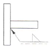
- 화살표 반대쪽 맞대기 용접이다.
- 화살표 쪽 맞대기 용접이다.
- 화살표 쪽 필릿 용접이다.
- 화살표 반대쪽 필릿 용접이다.
(정답률: 88%)
14. 도면 크기의 종류에서 A2 의 치수는 얼마인가?
- 420×594
- 594×841
- 297×420
- 841×1189
(정답률: 54%)
15. 도면의 윤곽선은 규정된 간격으로 그려야 한다. KS 규격에서 도면을 철하는 부분의 경우 A3 용지의 가장자리에서부터의 최소 간격은?
- 10mm
- 20mm
- 25mm
- 30mm
(정답률: 57%)
16. 다음 그림과 같은 제 3각법 투상도에서 A가 정면도일 때 배면도는?
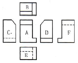
- E
- C
- D
- F
(정답률: 79%)
17. KS 규격에서 대상물의 보이지 않는 부분의 모양을 표시하는 데 쓰이는 선은?
- 아주 굵은선
- 지그재그선
- 가는 파선
- 굵은 1점 쇄선
(정답률: 71%)
18. 다음 용접 보조기호 중 끝단부를 매끄럽게 하는것을 의미하는 것은?
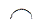
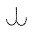
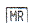
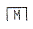
(정답률: 87%)
19. 판금, 제관의 전개 방식에서 그 종류가 아닌 것은?
- 방사선법
- 삼각형법
- 평행선법
- 사각형법
(정답률: 71%)
20. 도면에서 “비례척이 아님”을 뜻하는 영문자는?
- NS
- SN
- TS
- ST
(정답률: 89%)
2과목: 용접구조설계
21. 그림과 같은 V형 맞대기 용접에서 굽힘 모멘트가(Mb)가 10000kgfㆍcm 작용하고 있을 때, 최대 굽힘 응력은? (다만, ℓ=150mm, t=20mm 이고 완전 용입일 때이다.)
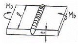
- 10[kgf/cm2]
- 100[kgf/cm2]
- 1000[kgf/cm2]
- 10000[kgf/cm2]
(정답률: 58%)
22. 맞대기 용접에서 변형이 가장 적은 홈의 형상은 어느 것인가?
- V 형 홈
- U 형 홈
- X 형 홈
- 한쪽 J 형 홈
(정답률: 70%)
23. 용접선에 따라 응력을 제거할 목적으로서 압축응력 부분을 가스불꽃 가열한 직후에 수냉하여 그 부위를 소성 변형시켜 잔류 응력을 감소시키는 것은?
- 억제법
- 역 변형법
- 도열법
- 저온응력 제거법
(정답률: 64%)
24. 용접 후 잔류 응력을 완화하는 방법은?
- 피닝(peening)
- 치핑(chipping)
- 담금질(quenching)
- 노멀라이징(normalizing)
(정답률: 82%)
25. 용접 길이가 짧아서 변형 및 잔류 응력이 그다지 문제가 되지 않을 때 이용 되며 수축과 잔류 응력이 용접의 시작 부분보다 끝 부분에 더 크게 되는 것은?
- 대칭법
- 후진법
- 스킵법
- 전진법
(정답률: 64%)
26. KS 용접용어에서 그림과 같은 용접 이음의 명칭은?
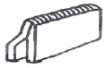
- H형 이음
- 변두리이음
- Y형 이음
- 맞대기이음
(정답률: 90%)
27. 형틀 굽힘 시험은 다음과 같은 시험 방법으로 용접부의 연성과 안전성을 조사하는 것인데, 형틀 굽힘 시험의 내용에 해당되지 않는 것은?
- 표면 굽힘 시험
- 이면 굽힘 시험
- 롤러 굽힘 시험
- 측면 굽힘 시험
(정답률: 71%)
28. 용접시공시 용접순서에 관한 설명으로 가장 옳은 것은?
- 용접물 중립축에 대하여 수축력 모멘트의 합이 최대가 되도록 한다.
- 같은 평면 안에 많은 이음이 있을 때에는 수축은 가능한 한 중앙으로 보낸다.
- 용접물의 중심에 대하여 항상 대칭으로 용접을 진행시킨다.
- 수축이 작은 이음을 가능한 한 먼저 용접하고, 수축이 큰 이음(맞대기 등)을 뒤에 용접한다.
(정답률: 65%)
29. 용접에서 역변형법의 설명에 해당되는 것은?
- 공작물을 가접 또는 지그로 고정하여 변형의 발생을 방지하는 법
- 용접 금속 및 모재의 수축에 대하여 용접 전에 반대 방향으로 굽혀 놓고 용접 작업하는 법
- 비드를 좌우대칭으로 놓아 변형을 방지하는 법
- 용접 진행 방향으로 뜀 용접을 하여 변형을 방지하는 법
(정답률: 81%)
30. 용접지그(welding jig)에 대한 설명 중 틀린 것은?
- 용접물을 용접하기 쉬운 상태로 놓기 위한 것이다.
- 용접제품의 치수를 정확하게 하기 위해 변형을 억제하는 것이다.
- 작업을 용이하게 하고 용접능률을 높이기 위한 것이다.
- 잔류 응력을 제거하기 위한 것이다.
(정답률: 84%)
31. 측면 필릿 용접 이음에서 필릿 용접의 크기와 ht 와 이론 목두께 와의 관계식으로 옳은 것은?
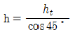
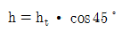
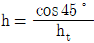
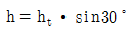
(정답률: 30%)
32. 그림과 같은 용착시공 방법은?
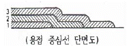
- 띄움법
- 캐스케이드법
- 살붙이법
- 전진블록법
(정답률: 82%)
33. 맞대기 용접의 홈의 형상이 아닌 것은?
- K형
- X형
- I형
- B형
(정답률: 92%)
34. 파괴 시험에 해당되는 것은?
- 음향시험
- 누설시험
- 형광 침투시험
- 함유수소시험
(정답률: 56%)
35. 용접 작업시 발생한 변형을 교정할 때 가열하여 열응력을 이용하고 소성변형을 일으키는 방법은?
- 박판에 대한 점 수축법
- 숏 피닝법
- 롤러에 거는 방법
- 절단 성형 후 재용접법
(정답률: 40%)
36. 용접 결함 중 구조상 결함에 해당되지 않는 것은?
- 융합불량
- 언더컷
- 오버랩
- 연성부족
(정답률: 75%)
37. 용접사에 의해 발생될 수 있는 결함이 아닌 것은?
- 용입불량
- 스패터
- 라미네이션
- 언더필
(정답률: 82%)
38. 용접부의 인장시험에서 모재의 인장강도가 45kgf/mm2이고 용접부의 인장강도가 31.5kgf/mm2 로 나타났다면 이 재료의 이음 효율은 얼마 정도인가?
- 62%
- 70%
- 78%
- 90%
(정답률: 60%)
39. 다음 중 자분탐상 시험을 의미하는 것은?
- UT
- PT
- MT
- RT
(정답률: 79%)
40. 주조품에 비교한 용접 이음의 장점 설명으로 틀린 것은?
- 이종재료의 접합이 가능하다.
- 용접변형을 교정할 때에는 시간과 비용이 필요치 않다.
- 목형이나 주형이 불필요하고 설비의 소규모가 가능하여 생산비가 적게 된다.
- 제품의 중량을 경감시킬 수 있다.
(정답률: 76%)
3과목: 용접일반 및 안전관리
41. 전기저항 용접법의 특징 설명으로 틀린 것은?
- 용제가 필요치 않으며 작업속도가 빠르다.
- 가압효과로 조직이 치밀해진다.
- 산화 및 변질 부분이 적다.
- 열손실이 많고 용접부의 집중 열을 가할 수 있다.
(정답률: 61%)
42. 아크 용접기의 사용률 공식으로 옳은 것은?
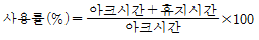
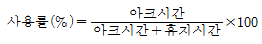
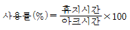
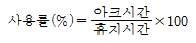
(정답률: 76%)
43. 피복 아크 용접에서 피복제의 역할로 옳은 것은?
- 스패터링(spattering)을 많게 한다.
- 용적(globule)을 조대화 한다.
- 아크를 불안정하게 한다.
- 용착 금속의 탈산 정련 작용을 한다.
(정답률: 83%)
44. 내균열성이 가장 좋은 피복 아크 용접봉은?
- 일미나이트계
- 저수소계
- 고셀룰로오스계
- 고산화티탄계
(정답률: 91%)
45. 프로판 가스 절단과 비교한 아세틸렌가스 절단의 장점이 아닌 것은?
- 점화하기 쉽다.
- 중성불꽃을 만들기 쉽다.
- 슬래그 제거가 쉽다.
- 박판 절단시 절단속도가 빠르다.
(정답률: 35%)
46. 플래시 버트(flash butt) 용접에서 3단계 과정만으로 조합된 것은?
- 예열, 플래시, 업셋
- 업셋, 플래시, 후열
- 예열, 플래시, 검사
- 업셋, 예열, 후열
(정답률: 75%)
47. 아크 용접기의 특성 중 아크 길이에 따라 전압이 변동하여도 전류값은 거의 변하지 않는다는 특성은?
- 정전압특성
- 부하특성
- 정전류특성
- 상승특성
(정답률: 69%)
48. 경납 땜(soldering) 의 구분온도는?
- 땜납의 용융점 450℃정도
- 모재의 용융점 500℃정도
- 피복제의 용융점 350℃정도
- 고상과 액상의 1000℃정도
(정답률: 87%)
49. 산소 용기의 취급에서 잘못된 사항은?
- 운반이나 취급에서 충격을 주지 않는다.
- 가연성 가스와 함께 저장하여 누설되어도 인화되지 않게 한다.
- 기름이 묻은 손이나 장갑을 끼고 취급하지 않는다.
- 운반시 가능한 한 운반 기구를 이용한다.
(정답률: 94%)
50. 전기저항용접과 가장 관계가 깊은 법칙은?
- 줄의 법칙
- 플레밍의 법칙
- 암페어의 법칙
- 뉴턴의 법칙
(정답률: 57%)
51. 피복 아크 용접에서 자기 쏠림을 방지하는 대책은?
- 접지점은 용접부에서 가까이 한다.
- 용접봉 끝을 아크 쏠림 방향으로 기울이다.
- 교류를 사용한다.
- 긴 아크를 사용한다.
(정답률: 64%)
52. 핸드 실드 차광유리의 규격에서 100~300A 미만의 아크 용접 시 다음 중 가장 적합한 차광도 번호는?
- 1~2
- 5~6
- 7~9
- 10~12
(정답률: 83%)
53. 교류 용접기의 아크 출력이 9.0kW 이고, 내부 손실이 4.0kW 일 때 용접기의 효율은?
- 약 54.1%
- 약 69.2%
- 약 74.3%
- 약 89.5%
(정답률: 48%)
54. 탄소아크 절단에 압축공기를 병용하여 전극 홀더의 구멍에서 탄소 전극봉에 나란히 분출하는 고속의 공기를 분출시켜 용융금속을 불어 내어 홈을 파는 방법은?
- 아크 에어 가우징
- 불꽃 가우징
- 기계적 가우징
- 산소ㆍ수소 가우징
(정답률: 90%)
55. 가스절단에서 판 두께가 12.7㎜일 때, 표준 드래그의 길이는 다음 중 얼마인가?
- 2.4㎜
- 5.2㎜
- 5.6㎜
- 6.4㎜
(정답률: 60%)
56. 아크 용접에서 전격 및 감전방지를 위한 주의사항으로 틀린 것은?
- 협소한 장소에서의 작업시 신체를 노출하지 않는다.
- 무부하 전압이 높은 교류 아크용접기를 사용한다.
- 작업을 중지할 때는 반드시 스위치를 끈다.
- 홀더는 반드시 정해진 장소에 놓는다.
(정답률: 94%)
57. 화재에 대한 설명으로 잘못 연결된 것은?
- A급 화재 - 일반 가연물화재
- B급 화재 - 유류화재
- C급 화재 - 전기화재
- D급 화재 - 종합화재
(정답률: 76%)
58. 납땜에서 주로 경납용 용제로 사용되는 것은?
- 수지
- 붕산
- 염화암모니아
- 염화아연
(정답률: 85%)
59. 점용접에서 사용하는 전극형상의 종류가 아닌 것은?
- R 형
- P 형
- C 형
- T 형
(정답률: 41%)
60. 열원이 광선이며 진공 중에서 용접이 가능하고 원격 조작이 가능하며 열의 영향범위가 좁은 용접법은?
- 레이저 용접
- 원자수소 용접
- 플라스마 용접
- 테르밋 용접
(정답률: 66%)